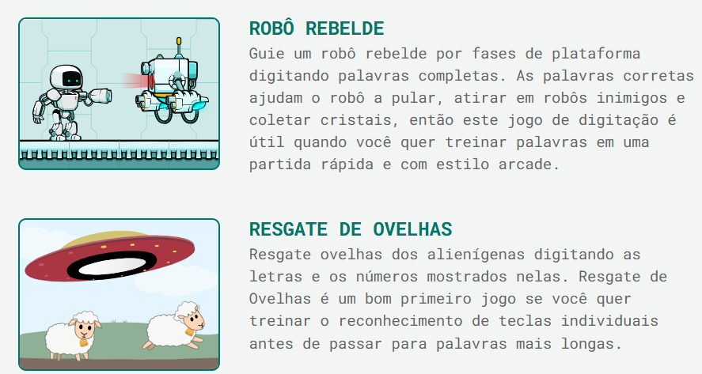
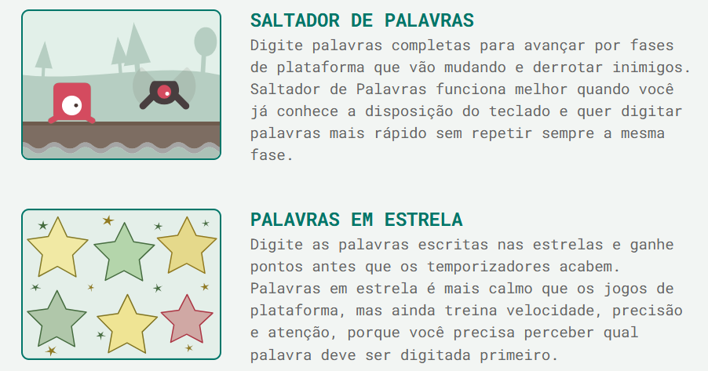

🎮 Nossos Jogos Didáticos
🎯 AgileFingers - Desafios de Digitação
Nossa atividade diária: dedicamos 10 minutos todas as aulas para treinar a memória muscular de cada dedo de forma inteligente sem olhar para o teclado.
Click aqui para ir para o Agile Fingers
A prática diária leva à perfeição
🎯 Jogos do AgileFingers
Vimos que podiamos aprender a digitar brincando.
Click aqui para ir para os jogos do Agile Fingers

Aprender jogando é muito melhor!